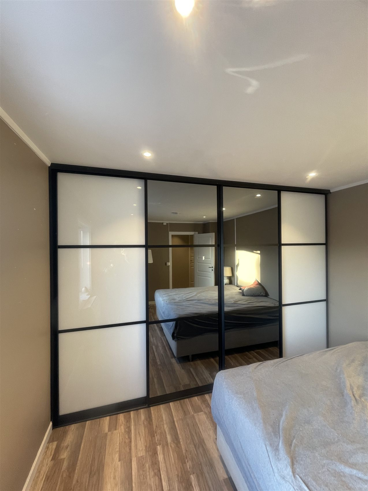
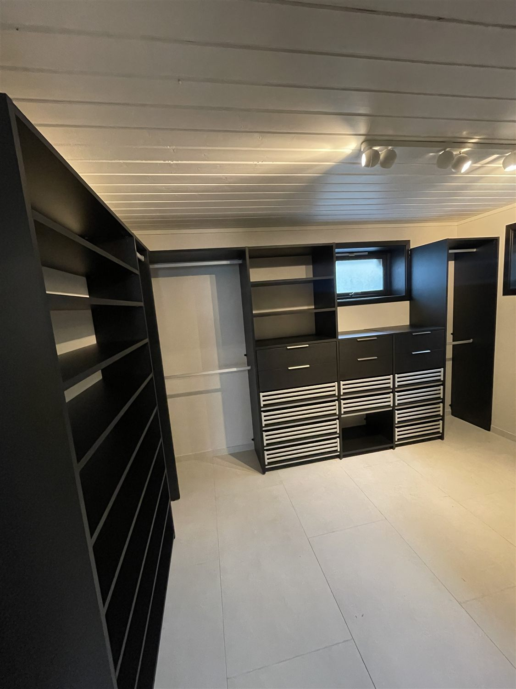
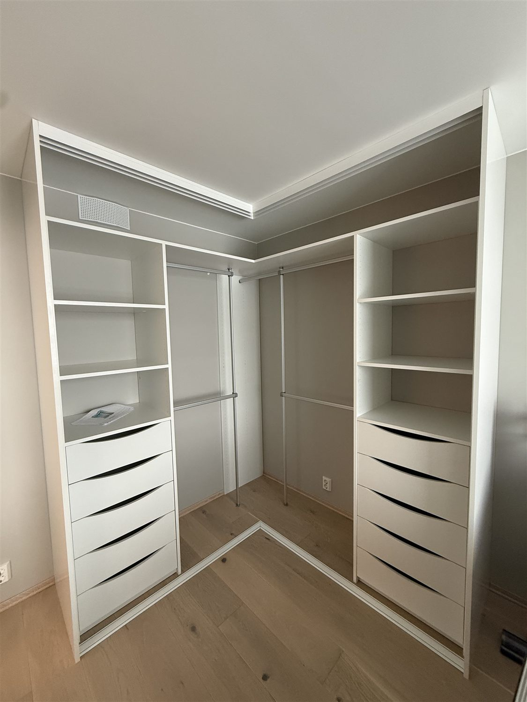
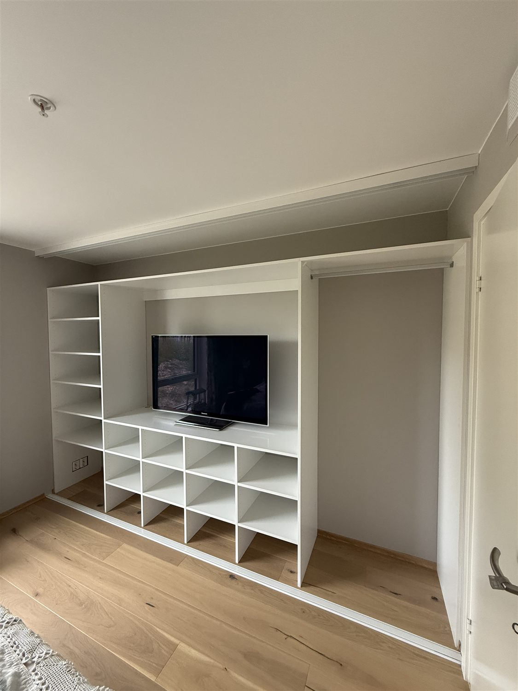
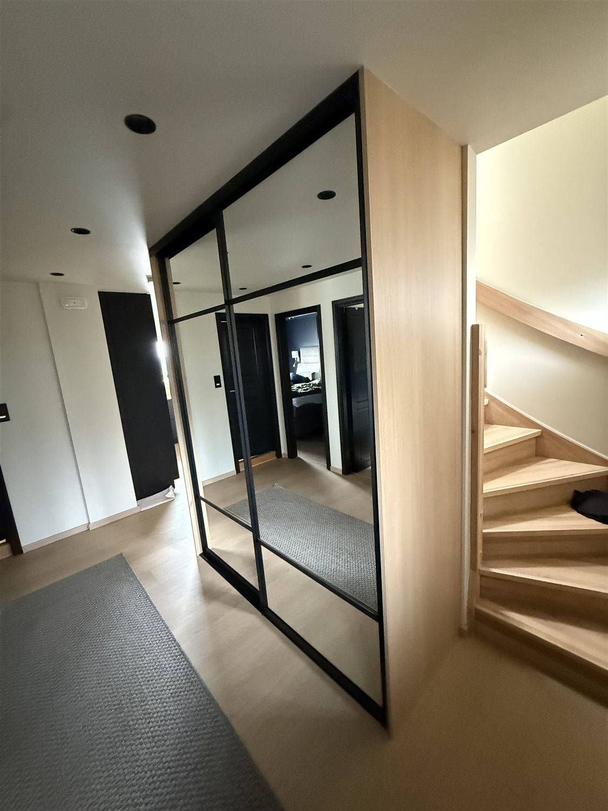
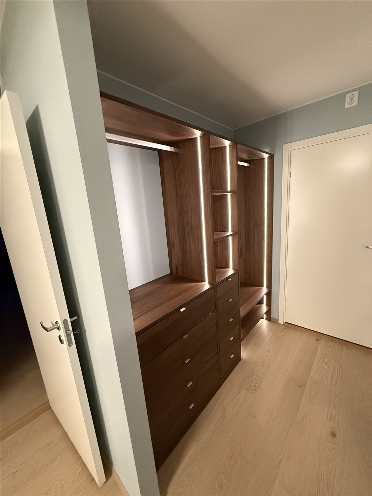
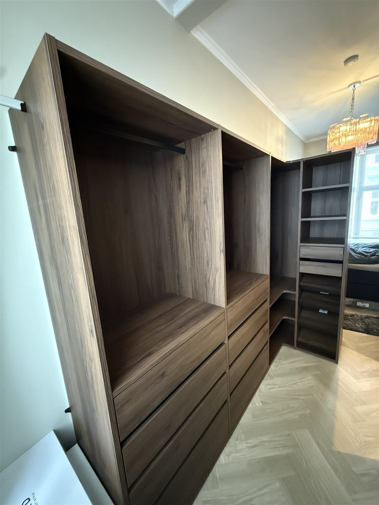
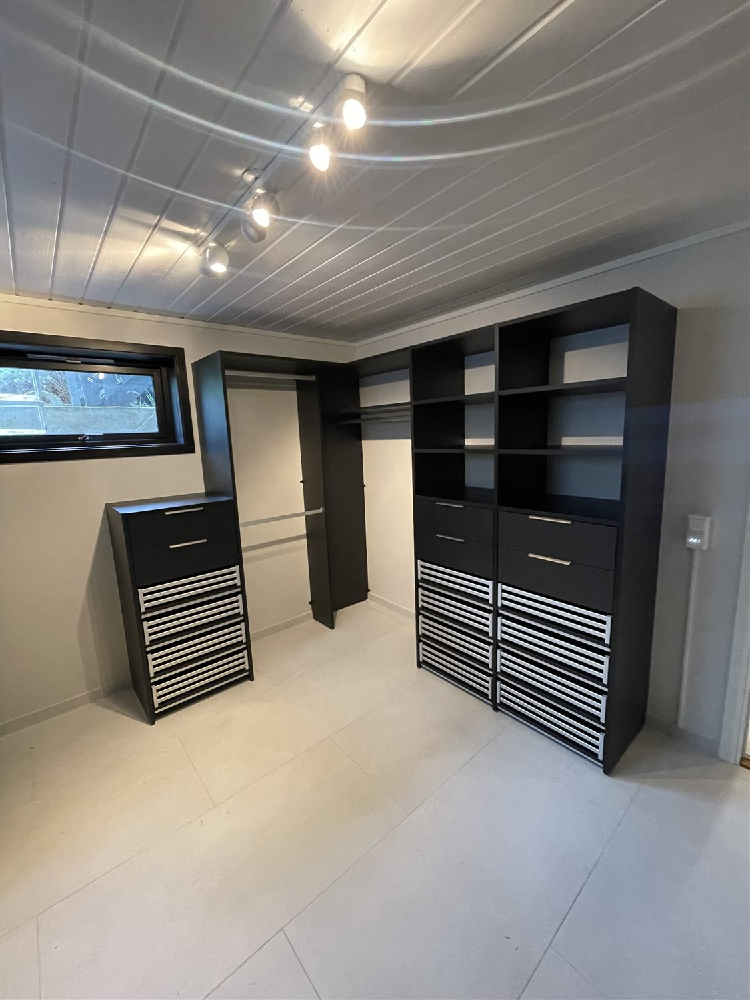
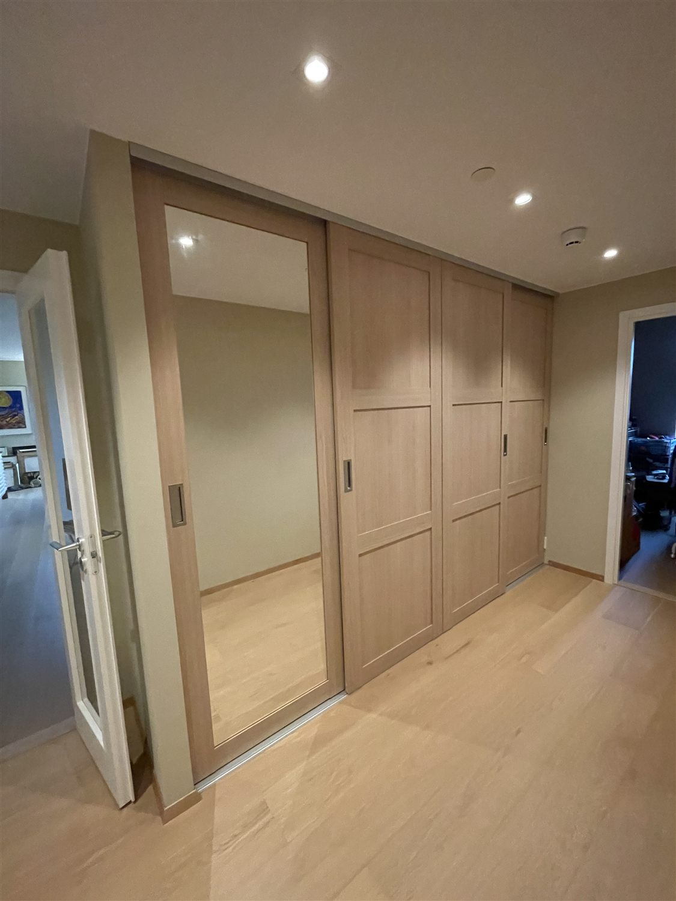
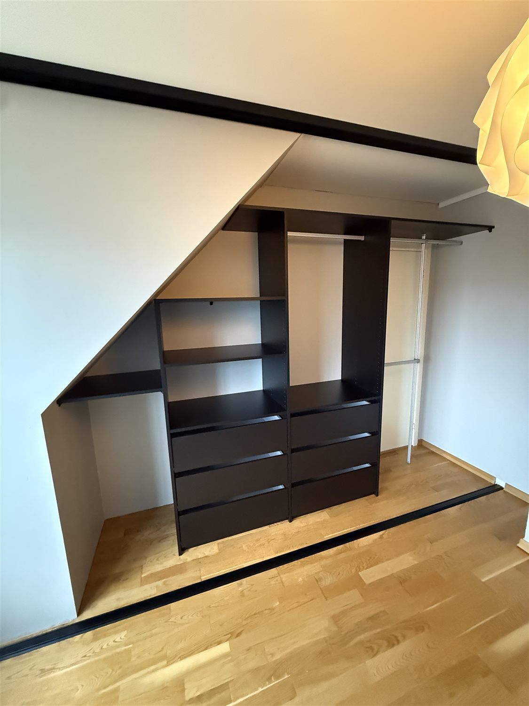

Kontor, skole og næring
Montering av kontorpulter, skap, reoler, møtebord og inventar for lokaler som skal raskt i bruk.

Møbelmontering og småjobber i Norge
Ryddig og effektiv hjelp med kontormøbler, garderober, kjøkken, hyller, TV-fester og små handyman-oppdrag hjemme eller på arbeidsplassen.
Tjenester
Fra en enkel hylle til større innredningsprosjekter: arbeidet planlegges nøkternt, utføres presist og avsluttes ryddig.
Montering av kontorpulter, skap, reoler, møtebord og inventar for lokaler som skal raskt i bruk.
Nøyaktig montering av skap, skinner, fronter, kurver og innredning, også der vegger og tak krever tilpasning.
Hjelp med avansert montering, hjørneskap, uttrekk, skyvesystemer og løsninger under skråtak eller mansard.
Senger, kommoder, spisebord, skap, reoler og flatpakkede møbler monteres stabilt og uten unødvendig rot.
Bilder, speil, hyller, TV-braketter, gardinstenger og andre detaljer henges opp pent og sikkert.
Små fikser hjemme eller på kontoret tas seriøst. Ingen jobb er for liten når den må gjøres ordentlig.
Hvem vi hjelper
Bedrifter trenger tempo og forutsigbarhet. Private kunder trenger trygg hjelp hjemme. Begge deler krever god kommunikasjon.
Effektiv montering for kontor, skole, barnehage, møterom og kommersielle interiører.
Hjelp med møbler, garderober, kjøkkenmoduler og små monteringsting som må bli riktig første gang.
Utført arbeid
Bildene viser faktiske arbeider fra prosjektmappen: garderober, skyvedører, skapinnredning og tilpassede løsninger.









Hvorfor velge oss
God montering handler om mer enn å få delene sammen. Det handler om å lese rommet, bruke riktig feste, justere fronter og avslutte slik at resultatet tåler hverdagen.
Skap, fronter, skinner og beslag justeres med fokus på rette linjer og stabil bruk.
Arbeidsområdet holdes oversiktlig, og emballasje samles opp etter avtale.
Avtalt tid respekteres, og eventuelle avklaringer tas før arbeidet starter.
Vanskelige hjørner, mansard, skjeve vegger og trange rom håndteres praktisk.
Slik fungerer det
Fortell hva som skal monteres, hvor jobben er, og legg gjerne ved bilder når kontaktkanalen er satt opp.
Omfang, materialer, veggtype og tidsbruk avklares før avtale.
Du får en praktisk tid som passer for hjemmet, kontoret eller lokalet.
Jobben utføres effektivt, detaljer justeres, og området etterlates ryddig.
FAQ
Ja. En hylle, et speil eller en TV-brakett kan være like viktig å få riktig som en større garderobe.
Ja. Kontorer, skoler, barnehager, møterom og næringslokaler kan få hjelp med flere møbler og rom samlet.
Send gjerne produktlenke, antall møbler, romtype, adresseområde og bilder av vegger, gulv eller nisjer.
Ja. Slike jobber vurderes på forhånd slik at løsning, feste og tidsbruk blir riktig.
Det hjelper om varene er levert, rommet er tilgjengelig og monteringsanvisninger følger med.
Kontakt
Send en kort forespørsel med hva du trenger hjelp til. Beskriv gjerne møblene, rommet og ønsket tidspunkt, så blir det enklere å vurdere jobben.